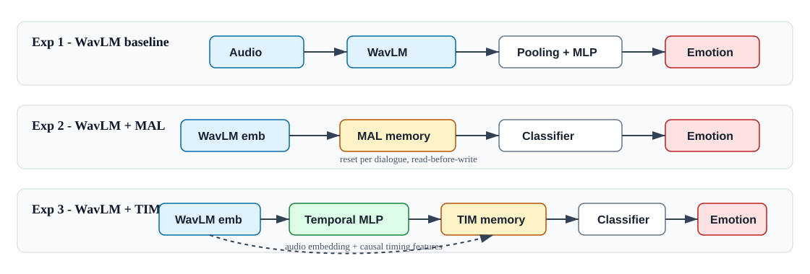
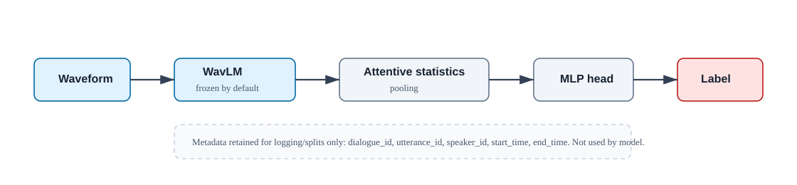
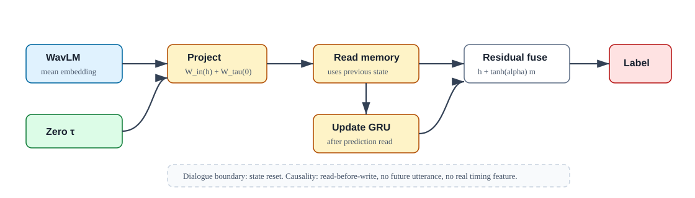
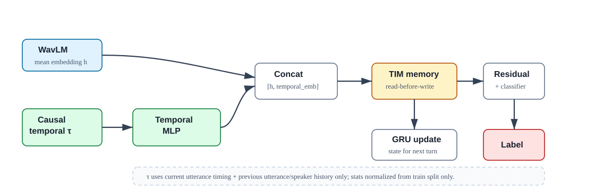

Báo cáo thí nghiệm SER trên IEMOCAP
So sánh ba mô hình: WavLM baseline, WavLM + MAL, và WavLM + TIM.
Kết quả lấy từ thư mục outputs/hf_checkpoints/.
Dataset: IEMOCAP Task: Speech Emotion Recognition Split: LOSO, test session 5 Labels: angry, happy, neutral, sad
1. Tóm tắt mục tiêu
Mục tiêu của chuỗi thí nghiệm là kiểm tra tác động của bộ nhớ hội thoại và đặc trưng tương tác thời gian đối với bài toán nhận diện cảm xúc từ lời nói. Ba cấu hình được thiết kế tăng dần về mức sử dụng ngữ cảnh:
2. Xử lý dữ liệu
Pipeline dữ liệu dùng phiên bản Kaggle của IEMOCAP. Mỗi utterance được map với audio, annotation cảm xúc, transcript và metadata hội thoại.
Session1 đến Session5.
dialog/EmoEvaluation/*.txt, không lấy từ transcript text.
utterance_id.
sentences/wav/<dialogue_id>/<utterance_id>.wav.
Label mapping
| Raw label | Final label | Class id |
|---|---|---|
ang | angry | 0 |
hap, exc | happy | 1 |
neu | neutral | 2 |
sad | sad | 3 |
Test set
| Class | Số mẫu | Tỉ lệ |
|---|---|---|
| angry | 170 | 13.70% |
| happy | 442 | 35.62% |
| neutral | 384 | 30.94% |
| sad | 245 | 19.74% |
| Tổng | 1241 | 100.00% |
3. Kiến trúc mô hình

Hình 1. Tổng quan khác biệt chính giữa ba thí nghiệm: baseline chỉ dùng audio, MAL thêm memory hội thoại, TIM thêm temporal interaction features vào memory.
Experiment 1: WavLM baseline no MAL no TIM

Hình 2. Baseline là utterance-level classifier: metadata được lưu để trace kết quả nhưng không đi vào forward pass.
- Input: waveform của một utterance.
- Backbone:
microsoft/wavlm-base. - Pooling: attentive statistics pooling.
- Classifier: dropout + linear layer.
- Metadata như
dialogue_id,speaker_id,start_time,end_timeđược giữ trong dataset/output nhưng không đi vào model. - Mặc định WavLM frozen, chỉ train pooling/classifier head.
Experiment 2: WavLM + MAL no TIM

Hình 3. MAL đọc memory state trước khi update, reset theo dialogue boundary, và chỉ nhận zero temporal vector.
- WavLM được dùng để precompute fixed mean-pooled utterance embeddings.
- Utterance được group theo dialogue và sort theo
start_time,end_time,utterance_id. - MAL memory dùng GRUCell, reset state ở đầu mỗi dialogue.
- Memory là causal/read-before-write: dự đoán utterance hiện tại đọc memory cũ trước, sau đó mới update state.
- Temporal interface vẫn tồn tại nhưng nhận vector zero 16 chiều.
- Không tính duration, gap, overlap, interruption, hoặc speaker feature thật làm input.
Experiment 3: WavLM + TIM

Hình 4. TIM thay zero vector bằng temporal features causal, encode bằng MLP rồi concat với WavLM embedding trước memory.
- Giữ setup embedding và memory gần giống Exp 2 để so sánh công bằng.
- Thêm temporal feature encoder: MLP nhỏ nhận 16 temporal interaction features.
- Memory input là concat giữa WavLM embedding và temporal embedding.
- Continuous temporal features được normalize bằng train split statistics only.
- Binary flags không normalize.
- Các đặc trưng speaker habit được tính causal từ lịch sử trước đó của speaker, không dùng tương lai.
16 temporal features của TIM
| # | Feature | Ý nghĩa |
|---|---|---|
| 1 | duration | Độ dài utterance hiện tại. |
| 2 | gap_prev | Khoảng cách với utterance trước. |
| 3 | overlap_prev | Độ chồng lấn với utterance trước. |
| 4 | overlap_ratio | Tỉ lệ overlap so với duration. |
| 5 | is_overlap | Cờ có overlap. |
| 6 | is_interrupting_prev | Cờ speaker hiện tại ngắt lời speaker trước. |
| 7 | speaker_switch | Cờ đổi speaker so với utterance trước. |
| 8 | same_speaker | Cờ cùng speaker với utterance trước. |
| 9 | turn_index_norm | Vị trí turn chuẩn hóa theo max train dialogue length. |
| 10 | prev_gap_abs | Trị tuyệt đối của gap trước. |
| 11 | short_response | Cờ phản hồi ngắn. |
| 12 | long_pause | Cờ pause dài. |
| 13 | speaker_prev_overlap_rate | Tỉ lệ overlap trước đó của speaker. |
| 14 | speaker_prev_mean_gap | Mean gap trước đó của speaker. |
| 15 | speaker_prev_mean_duration | Mean duration trước đó của speaker. |
| 16 | speaker_prev_turn_count_norm | Số turn trước đó của speaker, chuẩn hóa. |
4. Thiết lập huấn luyện và đánh giá
| Thành phần | Exp 1: Baseline | Exp 2: MAL | Exp 3: TIM |
|---|---|---|---|
| Output dir của kết quả đang phân tích | outputs/hf_checkpoints/wavlm_baseline_no_mal_no_tim |
outputs/hf_checkpoints/wavlm_mal_no_tim |
outputs/hf_checkpoints/wavlm_tim |
| Checkpoint selection | Best validation UA | Best validation UA | Best validation UA |
| Test set | Session 5 | Session 5 | Session 5 |
| Metrics | WA, UA, Macro-F1, WF1, per-class precision/recall/F1, confusion matrix | ||
Định nghĩa metrics: WA là overall accuracy, UA là balanced accuracy/macro recall, Macro-F1 là F1 trung bình đều theo class, và WF1 là weighted F1 theo support của class.
5. Kết quả tổng thể trên test set
| Model | Best epoch | Loss | WA | UA | Macro-F1 | WF1 |
|---|---|---|---|---|---|---|
| WavLM baseline | 6 | 1.0996 | 50.36 | 52.46 | 50.09 | 50.12 |
| WavLM + MAL no TIM | 71 | 0.8824 | 70.75 | 71.52 | 70.90 | 70.61 |
| WavLM + TIM | 35 | 0.7654 | 73.25 | 72.91 | 73.71 | 73.26 |
| So sánh | ΔWA | ΔUA | ΔMacro-F1 | ΔWF1 |
|---|---|---|---|---|
| MAL vs baseline | +20.39 | +19.06 | +20.82 | +20.49 |
| TIM vs baseline | +22.88 | +20.44 | +23.62 | +23.14 |
| TIM vs MAL | +2.50 | +1.39 | +2.80 | +2.65 |
Kết quả tổng thể cho thấy memory theo dialogue tạo ra bước nhảy lớn so với baseline utterance-level. TIM tiếp tục cải thiện trên MAL, nhưng mức tăng nhỏ hơn nhiều so với bước tăng từ baseline sang MAL.
6. Per-class F1
| Model | angry | happy | neutral | sad |
|---|---|---|---|---|
| Baseline | 50.66 | 48.78 | 52.56 | 48.36 |
| MAL | 75.98 | 70.81 | 71.19 | 65.64 |
| TIM | 81.00 | 74.18 | 72.98 | 66.67 |
TIM đạt F1 cao nhất ở cả bốn class. Class sad vẫn là class khó nhất trong hai model memory,
còn baseline gần như không phân biệt tốt class nào.
7. Subset metrics theo model
Bảng dưới đây được sắp theo đúng nhóm model: 6 dòng Baseline, 6 dòng MAL, 6 dòng TIM.
Các subset được định nghĩa từ temporal columns trong wavlm_tim/predictions.csv và join qua utterance_id
để chấm lại baseline/MAL trên cùng tập utterance.
| Model | Subset | N | WA | UA | Macro-F1 | WF1 |
|---|---|---|---|---|---|---|
| Baseline | no_overlap | 683 | 50.07 | 52.16 | 49.48 | 49.39 |
| Baseline | overlap | 558 | 50.72 | 51.08 | 48.92 | 50.96 |
| Baseline | strong_overlap | 241 | 49.79 | 42.30 | 39.61 | 49.51 |
| Baseline | short_response | 132 | 47.73 | 56.34 | 45.54 | 49.75 |
| Baseline | long_pause | 416 | 50.48 | 50.49 | 49.11 | 49.49 |
| Baseline | speaker_switch | 739 | 50.34 | 52.35 | 50.14 | 50.38 |
| MAL | no_overlap | 683 | 69.40 | 69.08 | 68.63 | 68.99 |
| MAL | overlap | 558 | 72.40 | 74.13 | 73.25 | 72.77 |
| MAL | strong_overlap | 241 | 73.03 | 72.82 | 71.91 | 73.62 |
| MAL | short_response | 132 | 73.48 | 79.66 | 69.70 | 74.55 |
| MAL | long_pause | 416 | 69.71 | 67.63 | 68.58 | 69.11 |
| MAL | speaker_switch | 739 | 69.69 | 71.80 | 71.08 | 70.04 |
| TIM | no_overlap | 683 | 73.94 | 72.29 | 73.49 | 73.61 |
| TIM | overlap | 558 | 72.40 | 74.13 | 73.94 | 72.88 |
| TIM | strong_overlap | 241 | 73.86 | 72.40 | 71.15 | 74.26 |
| TIM | short_response | 132 | 79.55 | 77.40 | 77.38 | 79.65 |
| TIM | long_pause | 416 | 73.32 | 71.06 | 72.52 | 72.88 |
| TIM | speaker_switch | 739 | 70.91 | 72.81 | 72.65 | 71.32 |
Số in xanh là metric tốt nhất giữa ba model trên cùng subset.
8. Phân tích kết quả
8.1 Memory là yếu tố tác động lớn nhất
Chênh lệch từ baseline sang MAL rất lớn: khoảng +20 điểm ở WA, UA, Macro-F1 và WF1. Điều này cho thấy SER hội thoại hưởng lợi mạnh từ thứ tự utterance và trạng thái hội thoại, ngay cả khi chưa dùng timing thật.
8.2 TIM cải thiện thêm nhưng không đồng đều ở mọi subset
TIM tốt nhất tổng thể và thắng phần lớn subset, đặc biệt ở no_overlap, long_pause,
và speaker_switch. Tuy nhiên, MAL cạnh tranh rất sát ở overlap,
và nhỉnh hơn TIM ở strong_overlap theo UA/Macro-F1 cũng như short_response theo UA.
8.3 Short response là vùng TIM mạnh nhất theo WA/WF1
Trên subset short_response, TIM đạt WA 79.55 và WF1 79.65, cao nhất trong các subset.
Điều này phù hợp với giả thuyết rằng response latency là tín hiệu hội thoại hữu ích cho cảm xúc.
Dù vậy, MAL lại có UA 79.66, nghĩa là phân bố recall theo class của MAL ở subset nhỏ này vẫn rất tốt.
8.4 Strong overlap còn chưa ổn định
Trên strong_overlap, TIM có WA/WF1 tốt nhất nhưng MAL có UA/Macro-F1 tốt hơn.
Vì subset này chỉ có 241 mẫu, sự khác biệt có thể nhạy với phân bố class.
Đây là nhóm nên xem confusion matrix hoặc per-class recall trước khi kết luận mạnh.
8.5 Lỗi chính vẫn là happy/neutral
Ở test tổng thể, lỗi lớn nhất của các mô hình memory vẫn là nhầm happy -> neutral.
TIM giảm nhiều lỗi cực đoan của baseline, nhưng ranh giới giữa happy và neutral vẫn là điểm yếu chính.
9. Kết luận
- Baseline WavLM utterance-level là control hợp lệ nhưng hiệu năng thấp, quanh 50 điểm F1.
- WavLM + MAL chứng minh dialogue memory tạo cải thiện lớn nhất.
- WavLM + TIM là mô hình tốt nhất tổng thể, đạt WA 73.25, UA 72.91, Macro-F1 73.71 và WF1 73.26.
- Temporal features có giá trị bổ sung, nhưng mức cải thiện so với MAL vừa phải và phụ thuộc subset.
- Nhóm subset nên phân tích sâu tiếp theo:
strong_overlap,short_response, và các lỗihappy -> neutral.